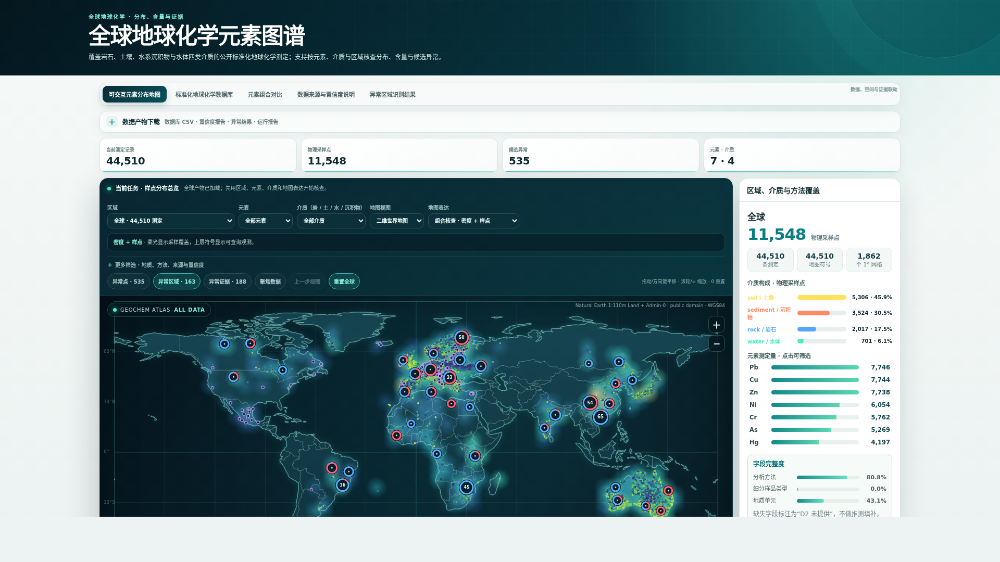
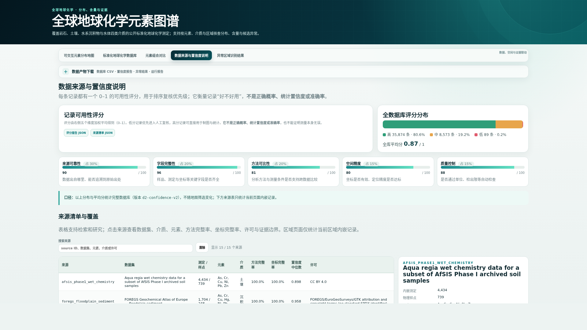

01 · GLOBAL GEOCHEMICAL ATLAS
让 Agent 自主完成
全球地球化学数据整编
提交一条研究请求，它自主完成数据获取、标准化质控、制图与溯源存档；无法满足的部分，如实报告为缺口。
前半段介绍系统设计；后半段是一次真实的全球尺度运行记录。
交互图谱标准化数据库来源与置信度异常筛查候选可复用 Skill

REAL PRODUCT VIEW
元素 × 区域 × 介质
一次请求，进入同一数据库、同一证据链、同一科学边界。
全球地球化学数据分散在数十个数据库和文献附表中，人工整编往往以月计。我们构建了一个可复用的 Agent Skill：提交研究请求后，它自主完成数据获取、标准化质控、制图与溯源存档，无法满足的部分如实报告为缺口。前半段介绍系统设计，后半段是一次真实的全球尺度运行记录。
PART 1 · 计划与设计 · 02 · THREE-STAGE PLAN
计划：从请求到成果的三阶段工作流
研究请求Cr（铬）· 中国东部 · 土壤→ 全流程自主执行
D1 · 数据获取来源准入与证据固定
优先采用官方数据库与带 DOI 的公开数据集；许可、版本与文件哈希全部存档，来源可逐项核查。
D2 · 标准化与质控按地球化学规范处理
统一计量单位与坐标参考系，执行质量控制；原始测定值全程保留，不被覆盖。
D3 · 成果生成产物可核查、可复用
图谱、标准化数据库与证据报告同步生成；仅质控达标的数据进入成果。
63个已登记的候选数据源
4类采样介质：岩石 · 土壤 · 沉积物 · 水
15项核心产物
1套可复用的 Agent Skill
工作流分三个阶段：D1 数据获取，完成来源准入，许可、版本与文件哈希全部存档；D2 标准化与质控，统一计量单位与坐标参考系，原始测定值全程保留；D3 成果生成，图谱、标准化数据库与证据报告同步产出，仅质控达标的数据进入成果。来源目录已登记 63 个候选，核心产物固定为 15 项。
PART 1 · 计划与设计 · 03 · SYSTEM DESIGN
设计：模型负责编排，计算交给确定性脚本
输入
研究请求
元素 · 区域 · 介质
约束与证据要求
编排层 · 模型
理解与调度
OpenCodeCodex命令行 / CI任意 Agent
计算层 · 脚本
确定性计算
相同输入
产出逐字节一致的结果
输出
15 项核心产物
图谱数据库科研报告后续分析
职责分离：模型不参与数值计算；单位换算、坐标转换、质控与异常判定全部由确定性脚本执行，结果可逐字节复现
关键设计是职责分离：大模型可能出错，因此只负责理解请求与调度流程；单位换算、坐标转换、质量控制、异常判定等全部科学计算由确定性脚本执行，相同输入产出逐字节一致的结果。同一 Skill 接入任意 Agent 环境，计算结果完全一致。
PART 1 · 计划与设计 · 04 · SCIENTIFIC GUARDRAILS
设计：四条硬约束，由执行器强制生效
RAW原始值不可变更
原始测定值、原单位与限定符永久保留；单位换算另行记录换算轨迹。
<DL删失值不替换
低于检出限（<LOD / <LOQ）的删失值如实保留；不以 0 或 LOD/2 代入。
CRS坐标系不假定
坐标参考系未声明时不默认为 WGS84；所有坐标转换全程留痕。
n≥20背景样本不足不出统计
可比样本量不足 20 时返回“背景不足”，不降低阈值强行计算。
FAIL-CLOSED无法满足科学条件时，明确报告缺口与原因——不产出貌似完整的结果
第四层设计是四条硬约束，由确定性执行器强制生效：原始测定值不可变更；低于检出限的删失值不以零或半检出限代入；坐标参考系未声明时不默认 WGS84；可比样本不足二十时不产出背景统计。总原则是 fail-closed：无法满足科学条件就明确报告缺口与原因，不产出貌似完整的结果。设计部分到此，下面看一次真实运行。
PART 2 · 真实运行记录 · 05 · AGENT EXECUTION LOG
8 月 15 日，一次全球尺度的自主采集运行
真实运行日志回放 · 2026-08-15 · 实际总时长 33 分 02 秒 · 约 78 倍速回放T+00:00
$ python3 run_atlas_request.py --request REQUEST.json \
--analysis-profile production --acquisition-mode online \
--online-source auto --per-analyte-observations 512 \
--source-timeout-seconds 600 --coordinate-mode auto
在线生产运行 · 全程自主 · 9 轮 · 33 分钟
自主终止零增量后停止采集，不以重复记录扩充数据量
191,715条测定 · 来自 29 个正式入库的公开来源
238项缺口进入修复队列，逐项标注原因
俄罗斯、南美与岩石介质覆盖不足，如实保留为缺口，未以其他区域的数据量掩盖。
这是 8 月 15 日真实运行的日志回放：实际跑了 33 分钟、9 轮，这里以约 78 倍速重放，每一行的轮次、计数、用时都取自 loop_report.json。看几个关键点：63 个候选来源完成准入审计后 29 个入库；两个 GEOROC 端点持续 HTTP 500，被如实记为失败；采集目标从每元素 512 条观测逐轮翻倍到 5 万上限；第 6 轮起增量为零，连续两轮问题签名相同后触发停机，发布 191,715 条测定；终态 needs_human_review，238 项缺口进入修复队列。按 L 可重放。如实报告未完成项，正是设计目标之一。
运行产物：191,715 条测定构成的全球图谱
PART 2 · 实际使用 · 点击右上标签现场进入真实产物 · 全部离线可用
191,715 条测定42,664 个采样点7 种元素3,351 个异常筛查候选
这是刚才那次运行的直接产物：一张全球交互图谱，191,715 条测定、42,664 个采样点、3,351 个异常筛查候选，自包含单文件、离线可用。主画面截图即该 74MB 运行产物实拍（原件在决赛材料包，线上未内置）。右上标签均为真实产物，可现场点开：回归运行产物切片、3D 地球、全球总览、中国区异常透视。
PART 2 · 实际使用 · 07 · RECORD-LEVEL PROVENANCE
实际使用：每条测定都支持记录级溯源

标准化记录原始值 · 标准化值 · 计量单位 · 分析方法 · 质控标记

来源与许可文献 DOI · 源文件行号 · 数据许可 · SHA-256 校验值
四级溯源链
原始
测定值标准化
轨迹来源
定位哈希
校验
置信度按四个维度分别报告：来源证据 · 分析就绪度 · 空间可用性 · 工作流完备性PART 2 · 实际使用 · 08 · INTERPRET ONE REAL CANDIDATE
异常筛查：一条真实候选的完整判定过程
真实样例 · 全球运行产出的 3,351 个筛查候选均经由同一判定链路
输入 · 测定值
土壤样品的砷（As）含量
23.9 mg/kg
美国阿拉巴马州 · A 层土壤样品
样品编号 C-328917
判定 · 背景比较
仅在可比分组内比较
45条可比记录：同介质 · 同方法 · 同地质单元
2.30可比组中位数（mg/kg）
10.4 倍相对可比组中位数的富集程度
z = 3.69稳健 Z 分数，超过 3.5 筛查阈值
判定结果：高值筛查候选
输出 · 证据链
判定依据全部可回溯
分析方法氢化物发生-原子吸收光谱（HG-AAS），与比较组一致
数据来源USGS DS 801（DOI 10.3133/ds801）· 源文件第 27 行
综合置信度 0.79同时标注：该记录缺少坐标不确定度声明
系统仅报告：高值筛查候选污染、矿化或成因判断需结合采样设计与独立验证，由研究者做出——筛查不构成结论。
看一条真实候选的判定过程。输入是一份土壤样品的砷测定值 23.9 毫克每千克。系统仅在可比分组内比较：同介质、同分析方法、同地质单元的 45 条记录，可比组中位数 2.30，该样品为其 10.4 倍，稳健 Z 分数 3.69，超过 3.5 的筛查阈值。输出的证据链包含分析方法、数据来源与综合置信度，并标注该记录缺少坐标不确定度声明。系统仅报告"高值筛查候选"；污染或矿化判断由研究者结合独立验证做出。
PART 2 · 运行验收 · 09 · REPRODUCIBLE PROOF
运行验收：成果与局限，一并如实报告
191,715条测定实际入库——9 轮在线采集，无重复计数
0条岩石介质测定——上游来源持续不可用，如实标注为空白
22.3%5° 陆地网格覆盖率（135/605）——距全球代表性尚有差距，未作夸大
238项缺口进入修复队列——俄罗斯、南美等区域逐项标注原因
0 错误15 项核心产物全部通过独立校验；跨环境重跑，结果逐字节一致
delivery_ready: false如实报告局限，是科研可信的前提
零增量后自主终止；交付回执明确标注"未达交付标准"，每项缺口附原因与修复建议——这比一张貌似完整的图谱更可信。
以上数字均可在运行产物的结构化报告中逐条核对。
运行验收。成果：191,715 条测定实际入库，9 轮在线采集，无重复计数。局限，系统自己报告了：岩石介质为零，因上游来源持续不可用；5 度陆地网格覆盖率 22.3%，距全球代表性尚有差距，未作夸大；238 项缺口进入修复队列并逐项标注原因。15 项核心产物全部通过独立校验，跨环境重跑结果逐字节一致。如实报告局限，是这套系统作为科研基础设施最重要的能力。
10 · THE NEXT LAYER FOR EARTH SCIENCE
让每个点
可追溯 · 可验证
可重新计算
Global Geochemical Atlas：把分散的公开地球化学数据，整编为 Agent 可执行、研究者可复核的科研基础设施。
191,715 条测定29 个正式来源记录级溯源逐字节可复现如实报告局限
决赛08_词元代理人队 · AI4S FUTURE SCIENCESKILLS HACKATHON
 体验在线产品asimfish.github.io/global-geochemical-atlas-demo
体验在线产品asimfish.github.io/global-geochemical-atlas-demo 检查代码与证据github.com/asimfish/global-geochemical-atlas-skill
检查代码与证据github.com/asimfish/global-geochemical-atlas-skill
让每一条地球化学测定可追溯、可验证、可重新计算。扫描二维码体验产品、检查代码与证据。谢谢。